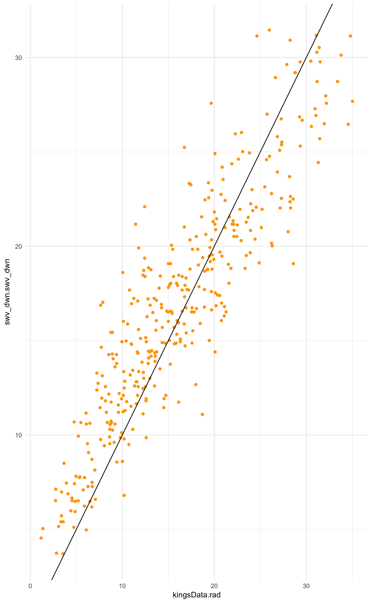

vignettes/use-case.Rmd
NASA - POWER data are often used with APSIM (White et al. 2012) or other models where data may be missing or as a whole data set where data are not readily available, e.g. modelling rice disease globally (Savary et al. 2012).
In this use case we illustrate how use NASA-POWER radiation data with existing station data that lacks radiation and format for use in the APSIM model (Keating et al. 2003) by creating a .met file using the R package, APSIM (Fainges 2017).
Using the APSIM::prepareMet() example, where data for Kingsthorpe, Qld, is provided by the package, we can create an equivalent data set from the NASA-POWER data compare it with the supplied data for Kingsthorpe, Queensland location 151.81 degrees longitude and -27.48 degrees latitude, for 2010. As a proxy for potential incoming radiation, SRAD, we’ll use swv_dwn, top-of-atmosphere insolation, from NASA - POWER.
To compare the data more easily using a graph and correlation measures, join the two data frames to create a data frame called, compare.
Graph radiation values from the weather station at Kingsthorpe in APSIM::kingsData along against the POWER data to illustrate why POWER data are often used as a substitute for on-the-ground measurements.
ggplot(compare, aes(x = kingsData.rad, y = swv_dwn.swv_dwn)) +
geom_point(colour = "orange") +
geom_abline(colour = "black", slope = 1) +
theme_minimal()
The graph shows a strong relationship between the two sets of data as does the correlation value, 0.90.
Now that we have the data from NASA-POWER, it’s possible to create a .met file for use in APSIM using the APSIM package if the data are missing the solar radiation. A duplicate data set of the kingsData from APSIM has been created, which has rad missing, kings_nasa. Using that data set, merge with the swv_dwn from the POWER data and create an APSIM .met file.
# inspect the kings_nasa data
str(kings_nasa)
#> 'data.frame': 365 obs. of 9 variables:
#> $ Date : chr "1/01/2010" "2/01/2010" "3/01/2010" "4/01/2010" ...
#> $ max.temp : num 28.5 31.2 33.6 27.1 27.8 ...
#> $ min.temp : num 19.5 20.5 22.3 21.2 18.4 ...
#> $ rain : num 0.2 0.6 0 3.4 0 0 0 7.4 0.2 0 ...
#> $ evaporation: num 2.6 4.4 5.8 4.6 3.6 ...
#> $ vp : num 18.1 22.1 24.3 21.5 19.2 ...
#> $ Windrun.km : int NA NA NA NA NA NA NA NA 357 248 ...
#> $ RH.at.9am : num NA NA NA NA NA ...
#> $ SVP.at.9am : num NA NA NA NA NA ...
# join the kings_data with swv_dwn from POWER
kings_met <- data.frame(kings_nasa, swv_dwn$swv_dwn)
# rearrange the columns to match expected order for .met file
kings_met <- kings_met[c(1:5, 10, 6:9)]
# from the APSIM documentation example
new_names <-
c("Date",
"maxt",
"mint",
"rain",
"evaporation",
"radn",
"vp",
"Wind",
"RH",
"SVP")
units <-
c("()",
"(oC)",
"(oC)",
"(mm)",
"(mm)",
"(MJ/m^2/day)",
"()",
"()",
"()",
"()")Using the kings_met data frame created previously, along with the new_names and units data frames, use APSIM::prepareMet() to create a .met file.
nasa_met <- prepareMet(kings_met,
lat = -27.48,
lon = 151.81,
newNames = new_names,
units = units)
#> [1] "Required column name check:"
#> [1] "maxt" "mint" "radn" "rain" "year" "day"
#> [1] TRUE TRUE TRUE TRUE TRUE TRUE
str(nasa_met)
#> Formal class 'metFile' [package "APSIM"] with 7 slots
#> ..@ const: chr(0)
#> ..@ lat : num -27.5
#> ..@ lon : num 152
#> ..@ tav : num 14.3
#> ..@ amp : num 18.4
#> ..@ units: chr [1:12] "()" "(oC)" "(oC)" "(mm)" ...
#> ..@ data :'data.frame': 365 obs. of 12 variables:
#> .. ..$ date : chr [1:365] "1/1/2010" "2/1/2010" "3/1/2010" "4/1/2010" ...
#> .. ..$ maxt : num [1:365] 28.5 31.2 33.6 27.1 27.8 ...
#> .. ..$ mint : num [1:365] 19.5 20.5 22.3 21.2 18.4 ...
#> .. ..$ rain : num [1:365] 0.2 0.6 0 3.4 0 0 0 7.4 0.2 0 ...
#> .. ..$ evaporation: num [1:365] 2.6 4.4 5.8 4.6 3.6 ...
#> .. ..$ radn : num [1:365] 13 17.8 21.8 17 17.8 ...
#> .. ..$ vp : num [1:365] 18.1 22.1 24.3 21.5 19.2 ...
#> .. ..$ Wind : int [1:365] NA NA NA NA NA NA NA NA 357 248 ...
#> .. ..$ RH : num [1:365] NA NA NA NA NA ...
#> .. ..$ SVP : num [1:365] NA NA NA NA NA ...
#> .. ..$ year : num [1:365] 2010 2010 2010 2010 2010 2010 2010 2010 2010 2010 ...
#> .. ..$ day : num [1:365] 1 2 3 4 5 6 7 8 9 10 ...You now have a complete .met file for use in APSIM that supplies solar radiation from the NASA-POWER data. It can be saved to local disk if desired using APSIM::writeMetFile() from APSIM.
Justin Fainges (2017) “APSIM: General Utility Functions for the ‘Agricultural Production Systems Simulator’”. R package version 0.9.2. https://CRAN.R-project.org/package=APSIM
Keating, Brian A., Peter S. Carberry, Graeme L. Hammer, Mervyn E. Probert, Michael J. Robertson, D. Holzworth, Neil I. Huth et al. “An overview of APSIM, a model designed for farming systems simulation.” European Journal of Agronomy 18, no. 3 (2003): 267-288.
Serge Savary, Andrew Nelson, Laetitia Willocquet, Ireneo Pangga and Jorrel Aunario (2012) “Modeling and Mapping potential epidemics of rice diseases globally” Crop Protection, Volume 34, Pages 6-17, ISSN 0261-2194 DOI: 10.1016/j.cropro.2011.11.009
Jeffrey W. White, Gerrit Hoogenboom, Paul W. Stackhouse, James M. Hoell (2009) “Evaluation of NASA satellite- and assimilation model-derived long-term daily temperature data over the continental US” Agricultural and Forest Meteorology, Volume 148, Issue 10, 2008, Pages 1574-1584, ISSN 0168-1923, DOI: 10.1016/j.agrformet.2008.05.017.